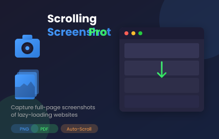
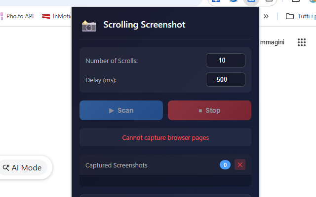

Scrolling Screenshot Pro
Imagine capturing an entire webpage in one seamless image 📸. With Scrolling Screenshot Pro, that's exactly what you get. This powerful Chrome extension automatically scrolls through any webpage, captures each section, and stitches them together into a single continuous image or PDF. Perfect for lazy-loading websites, infinite scroll pages, social media feeds, and long articles that traditional screenshot tools can't handle.
No more taking multiple screenshots and manually combining them. The extension handles everything automatically—scrolling, waiting for content to load, capturing, and intelligent stitching. It even detects when you've reached the end of a page and stops automatically, so you never capture duplicate content. Watch your screenshots appear in real-time in the preview panel as the capture progresses.
One of the standout features is the smart duplicate detection 🎯. Many websites use lazy loading, where content only appears as you scroll down. Scrolling Screenshot Pro waits for this content to load before capturing, ensuring you get every image, every paragraph, and every detail. The intelligent stitching algorithm removes overlapping areas between screenshots, creating a clean, seamless final image.
Export options are flexible and powerful. Save your capture as a single PNG image—perfect for sharing or archiving entire pages. Or export as a multi-page PDF where each screenshot becomes a separate page, ideal for documentation or printing. Customize the number of scrolls and delay timing to match any website's loading speed.
📋 How to Use
- Install the extension from the Chrome Web Store
- Navigate to any webpage you want to capture.
- Click the extension icon to open the popup panel.
- Set the number of scrolls (default: 10) and delay time.
- Click "Scan" to start the automatic capture process.
- Watch the real-time preview as screenshots are captured.
- Click "Save as Single Image" for a stitched PNG or "Save as PDF" for a multi-page document.
📷 Screenshots


✅ Features
- Smart auto-scrolling capture for full-page screenshots
- Works perfectly with lazy-loading and infinite scroll websites
- Real-time preview of captured screenshots
- Intelligent duplicate detection—auto-stops at page end
- Export as single stitched PNG image
- Export as multi-page PDF document
- Customizable scroll count and delay timing
- Clean, seamless stitching with no duplicate content
- Screenshots persist between sessions
- Dark theme professional interface
🎯 Perfect For
- Long articles and blog posts
- Social media timelines (Twitter, Facebook, LinkedIn, Instagram)
- E-commerce product pages with many images
- Online documentation and tutorials
- News websites and forums
- Any page with infinite scroll or lazy-loading content
With Scrolling Screenshot Pro, capturing entire webpages has never been easier. Whether you're archiving important content, creating documentation, saving receipts, or sharing long conversations, this extension gives you professional results with just one click. No external software needed—everything works right in your browser. 📸
⬇️ Download from Chrome Web Store